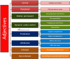

Diagrams and charts

Many people respond well to visual representations of complex
arrangements. You may not.
On this page, you will find some of the diagrams and charts used in many
guides in this site to summarise or illustrate concepts which are
otherwise difficult to understand from the prose descriptions.
Much detail is lost, of course, as the diagrams are meant either as
summaries or another way to visualise specific parts of guides.
These images are covered by the usual share-alike copyright
obligations as everything else on this site.
Clicking on the thumbnail image will link to the full-size image in
a new tab.
|  | A summary of adjective analysis |
 |
Cleft sentences |
 |
Function words |
| Adpositions in other languages |
 |
Cohesion |
 |
Genre approach to teaching | |
| fairly, pretty rather, quite |
 |
Communicative competence |
 |
The functions of have | |
 |
Adverbs modifying verbs |
 |
Consonants classified |
 |
Hedging in EAP |
 |
Adverbs in other functions and positions |
 |
Deixis |
 |
Impersonal and indefinite pronouns |
 |
Adverbials: adjuncts, disjuncts and conjuncts |
 |
Determiners |
 |
Inferencing |
 |
Types of adverbials |
 |
Disjuncts |
 |
Modality |
 |
Adverbial forms |
 |
Ellipsis and substitution |
|
Semi- and marginal modal auxiliary verbs |
 |
Adverbial functions |
 |
Error |
 |
Second language acquisition theories |
|
|
Types of antonymy |
 |
Field, tenor and mode |
 |
Speaking: compensation strategies |
 |
The article system |
 |
Morpheme : word ratios |
 |
Suasion |
|
|
Aspects summary |
 |
Multi-word verbs |
 |
Task-based learning |
 |
Aspects exemplified |
 |
Mood |
 |
Tenses in English |
 |
Types of authenticity | Past perfect simple vs. progressive |
 |
Turn taking | |
 |
Auxiliary verbs |
 |
Personal pronouns |
|
Verbal processes |
 |
The functions of be |
 |
Present perfect simple vs. progressive | The vocal tract | |
 |
Business English settings |
 |
Pre-determiners |
 |
Vowels: all |
|
|
Behaviourism |
 |
Primary auxiliary verbs |
 |
Vowels: diphthongs |
 |
Causative meanings |
 |
Pro-forms |
 |
Vowels: monophthongs |
 |
Causative summary |
|
Pure or central modal auxiliary verbs |
 |
Vowels: triphthongs |
|
|
Classifiers and partitives |
 |
Relative pronoun clauses |
 |
Word classes |
 |
Clause types |
 |
say, speak, talk, tell |
 |
Word formation |
 |
English irregular verbs |
|
Word formation: prefixation |
|
Word formation: suffixation |
{kind=link}
{kind=link}
{kind=link}
{kind=link}
{kind=link}
| Related areas | |
| The A-Z index | to find a specific guide or guide section |
| Glossaries | to get definitions of concepts and phenomena |
| The list of lists | for access to PDF documents which list a range of items |
| In-service index | to see what is covered in this section for practising teachers |
| Initial plus index | to see what guides are in the section for inexperienced or pre-service teachers |
| Courses on this site | for a list of courses on ELT Concourse |